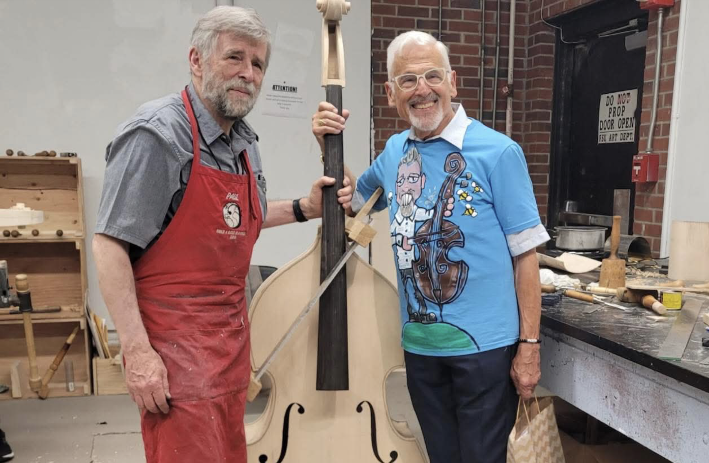

Double Bass • Bass Guitar
I am a bassist from Reading, PA. A graduate of Penn State University with degrees in English, Music Performance, and Music Studies.
My playing experience includes, but is not limited to:
Berks Sinfonietta (Principal), The Reading Pops Orchestra (Principal), Genesius Theater, Lehigh Valley Chamber Orchestra, Allegro Orchestra, Pennsylvania Philharmonic, Williamsport Symphony, Altoona Symphony,
Berks Opera Workshop, Reading Choral Society, Central Pennsylvania Symphony,
bass instruction at Berks Summer Strings Institute and Reading Symphony Junior Strings Orchestra, and more.
Musical theater shows that I have performed include, but are not limited to: Kinky Boots, Titanic the Musical, Raisin the Musical, Les Mis, School of Rock, Heathers, The Little Mermaid,
The Rocky Horror Picture Show, and the World Premiere of Broadway writer, Bill Russell's, Has Anyone Seen My Mind.
A brief excerpt from the first movement of the Abel Sonata for double bass:
A brief excerpt from a brand new musical:
The bass guitar in this video is a custom, fretless, 5-string.
I studied under Robert Nairn during my time at Penn State University, earning degrees in Double Bass Performance and Music Studies. Robert Nairn was formerly on faculty of
Penn State University and Juilliard. He was also principal bass of the Handel and Haydn Society before accepting a position as associate professor at the University of Melbourne.
As a student, I had the opportunity to meet and learn from many bassists including, but not limited to, Kurt Muroki,
Chi-chi Nwanoku, Barry Green, Andreas Bennetzen, Leon Bosch, Robert Oppelt, and Tim Dunin.
A native of Reading, Pennsylvania, I regularly perform throughout eastern Pennsylvania. I play double bass as well as bass guitar in a variety of settings. During the day,
I am an administrative assistant at Glenside Elementary in the Reading School District. I'm also a bit of a techie. I even made this website! I saw you can host a site free on GitHub, so why not learn some basic HTML/CSS?
It's not perfect but hopefully it does its job.
I am also the fortunate winner of the 2025 International Society of Bassists Build-a-Bass sweepstakes. As such, I am the proud owner of a one-of-a-kind, world class instrument that has been built by a team of renowned luthiers, under the leadership of Paul Hart.

This is a photo of the lead luthier, Paul Hart, and double bass legend and founder of the ISB, Gary Karr, as they pose with my double bass in progress.
I am available for substituting and other business inquries. Please reach me by email:
Villafane5101@Outlook.com